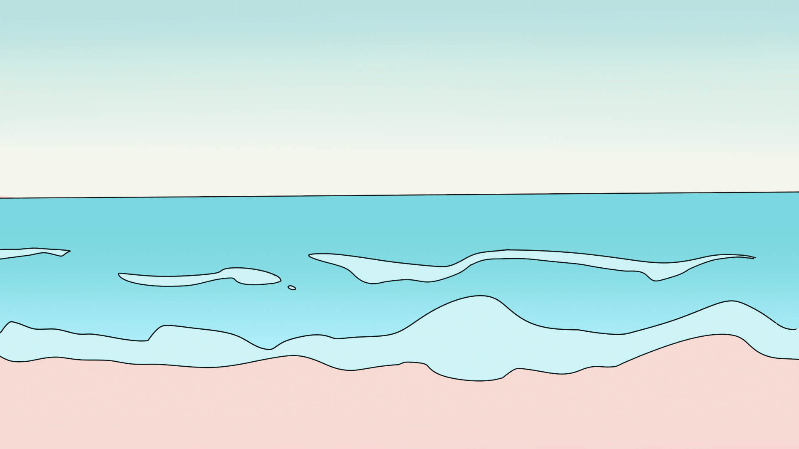

Working Through my Disability in College

It’s late 2019. I’d just finished up my first semester at Harper College. My grades? Nearly all F’s. I promptly dropped out, spending months trying to figure out my life.
For as long as I could remember, I’d been a ‘bad’ student. I failed all my classes, annoyed many teachers, and disappointed both my parents and myself. None of this changed at Harper, and so I dropped out to try and see if I had potential in other parts of life.

After hopping from job to job, I finally stopped and asked myself: “Could there be something wrong with me?” Clearly, there was. But was it something I could get help for?
After finally speaking with my doctor about my issues with school and with focusing on things in general, he responded with a disability that I hadn’t thought much of at all; ADHD.
After running tests, it seems that the culprit was finally found. All of these issues I had been having traced back to this one diagnosis. My lack of focus in class could finally be explained!
With this diagnosis, I could now work on myself while accounting for my disability. Working on my life through these new lenses helped me immensely; I treated myself and those around me better, and became more responsible. The treatments didn’t do it all for me: I still had to make myself do all of these important things. What the treatment did do is make things easier to start.
After working a new job and seeing how well my treatment worked, I chose to resume school. I was amazed. For once in my life, I was doing well in classes! I quickly ended my first semester back with great grades, and I finally felt confident in my actions. I knew I could do things better from here on out.
Everyone who needs help might need it in different ways. In my case, I got lucky with my treatment and doctors. They quickly helped me get my life back on track, and helped me to feel capable again. Other people who suffer from ADHD may not find success so quickly, but I would still implore anyone who’s questioning to ask their doctor.
Now that I understand myself better, I’m able to commit myself to my aspirations that I had major trouble with in the past. I finally feel that I can find my success. Something like this website would have never come up if I hadn’t asked my doctor all those years ago.
I hope that others like me, who might wonder about or suffer from these sorts of disabilities unknowingly, find their success as well.